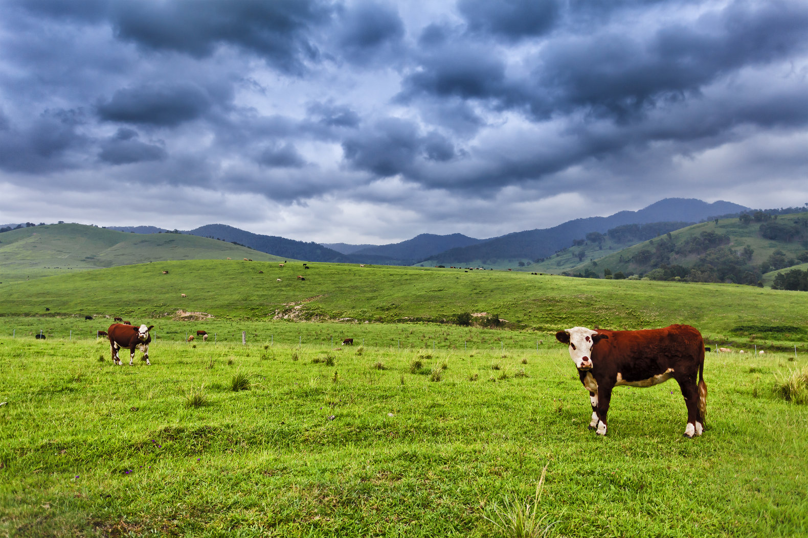
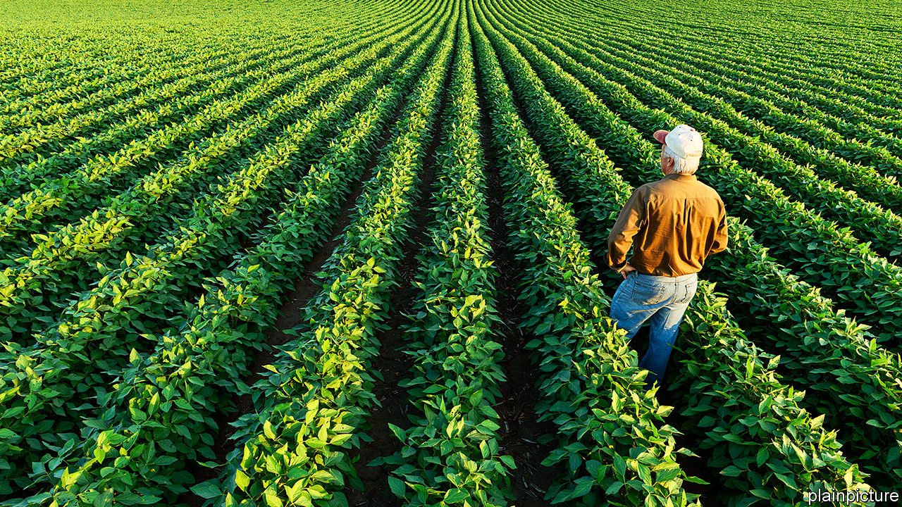
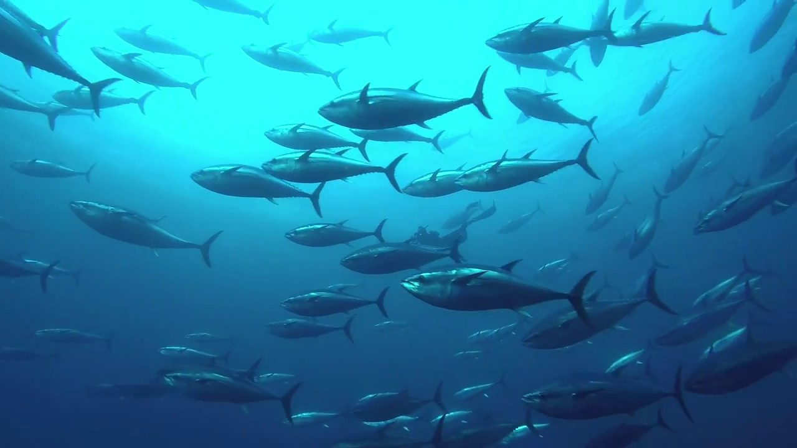

Our Protein
At SimpleSalad, we believe you deserve only the highest quality protein in your bowls.
This is why we are comitted to making every salad bowl with the real
protein - no artificial flavor or color - giving you the quality that you deserve.

We know how chicken can make or break a salad. That's why our chickens
raised in Winneshiek County, Iowa, are 100% free range, to ensure
no chicken will break your salad.
In our salad bowls, we accept nothing less than real food.
That's why our beef has no artificial preservatives, colors, or flavors.
Just the finest quality meat produced in Kansas, straight to your bowl.


Is meat not your thing? We've got you covered. Our tofu is made from
the finest soy beans produced in North Dakota, to ensure you eat well
no matter what.
Tuna. You either love it, or hate it. You'll love it even more knowing
our tuna is 100% real meat, grown by our enviromentally responsible producers
in Japan, to ensure you'll love every bowl.
